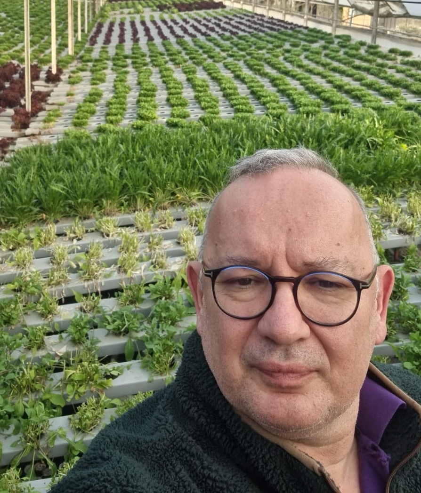

About Us
Our Story
Welcome to Pronova Hydroponics! Founded in 2020, we are dedicated to providing eco-friendly hydroponic solutions for everyone. Our journey began with a passion for hydroponics, and has since grown into a thriving business committed to sustainability and innovation.
At Pronova Hydroponics, we believe in harnessing the power of nature to grow healthy, nutrient-rich plants without the need for soil, pesticides and even space. Our team is comprised of passionate individuals who are dedicated to helping you succeed in your hydroponic endeavors.
Meet Our Founder
Volkan Tekin
Meet the visionary behind Pronova Hydroponics, Volkan Tekin. A graduate of METU with a degree in Electrical Engineering, he is the great mind behind the ingenious concept of eco-friendly hydroponic solutions. With a rich background in software solutions, Volkan embarked on a journey of exploration and innovation, delving into the world of hydroponics out of sheer passion for gardening and agricultural practices. His dedication to sustainability and his love for nurturing plants led him to establish Pronova Hydroponics, where he combines his expertise in technology with his green thumb to revolutionize the way we grow plants. Volkan is not just the CEO; he's the heart and soul of our company, driving us forward with his boundless creativity and unwavering commitment to excellence.
Connect with Volkan on LinkedIn.